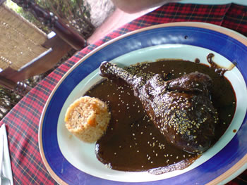

México y su riqueza culinaria
Los Estados Unidos de México es dueño de una de las culturas más extraordinarias de las Américas. Parte de esa riqueza cultural radica en su gastronomía, que refleja la historia del país y combina los elementos aztecas y mayas con los elementos españoles de la época colonial. La gastronomía mexicana se caracteriza por una infinidad de platos e ingredientes típicos de cada región, que poco tienen que ver con lo que en Estados Unidos se conoce como «comida mexicana».
La cocina del país azteca se nutre de fragantes y frescos ingredientes que se pueden admirar en cualquier mercado de una ciudad mexicana: tomates muy rojos, chiles frescos de color verde oscuro –o tan rojos como un ladrillo-, manojos de hierbas frescas, pescados y mariscos frescos, una gran variedad de deliciosos vegetales y frutas, pollos, cerdo, cabrito y carne de vaca y el aroma inconfundible de alimentos asados sobre una parrilla, uno de los métodos de preparación favoritos de ese país.
Los estados del norte y del centro 
La mayoría de los expertos divide la culinaria mexicana en seis regiones, diferentes unas de otras en geografía, clima e historia colonial. El norte mexicano es la capital de la parrilla; los norteños cocinan mucho, usando este método y para ahí van el pescado, langosta, camarones, cabrito, pollo y filetes de res. A diferencia del resto del país, donde el cerdo es más popular, en el norte la carne de res tiene muchísimos adeptos.
La región central, donde se sitúa la capital, es el núcleo de la comida más refinada y complicada, ya que fue allí, al igual que en otras capitales, adonde llegaban los mejores ingredientes y cocineros, para adaptar las recetas e incorporarlas a la gastronomía de la clase gobernante. Una comida en algunos de los múltiples excelentes restaurantes de la capital mexicana es un regalo para la vista y el olfato, con excepcionales platos que de este lado del mapa ni siquiera se conocen.
El famoso plato para las festividades, pollo o pavo en mole poblano (el mole es una salsa hecha con chocolate, ajíes y especias), es una fusión de las cocinas azteca y española y un excelente ejemplo de la gastronomía del área. Los aztecas pusieron los chiles, el pavo y el chocolate; el Viejo Mundo aportó especias como el clavo de olor, la canela, el ajo y los granos de pimienta. Otros platos de la región se preparan de manera más sencilla, asándolos a la parrilla.
Los estados de Jalisco y Michoacán, en la región centro-occidental, han hecho grandes aportes a la culinaria nacional. Su comida es sencilla y con sabor hogareño -carnitas de cerdo, salsas de chile rojo, pozole de maíz (un guisado con cerdo, ají y mucho caldo). A los habitantes de la región les gusta también asar pollos con cítricos, ajo e hierbas.
Los estados del sur
En el sur están Oaxaca, Chiapas y Guerrero, un paraíso culinario. Oaxaca, uno de los sitios más autóctonos de México, es famoso por sus siete moles y por sus fajitas de carne al estilo oaxaqueño, con tiras de cerdo marinadas en un adobo de chile rojo y servidas con pimientos asados y salsa de tomatillo.
Uno de los platos más famosos de la cocina mexicana es el pescado entero cocinado lentamente al estilo de Veracruz, con tomates, aceitunas, alcaparras, especias dulces y hasta pasas de uva. La cocina del Golfo de México no sólo está muy ligada a la herencia colonial española sino que también tiene gran similitud con las cocinas del Caribe: mariscos, plátanos y cocos se ven mucho en los platos de la zona.
La más original de las cocinas mexicanas es la de Yucatán, con fuertes raíces en la comida de sus ancestros mayas. El cerdo pibil, donde la carne y sus condimentos se envuelven en hojas de banana y se cocinan lentamente, es de allí. La pasta de achiote (hecha con semillas de achiote molido, especias, ajo y vinagre) y el recado (hecho de ajo, pimienta inglesa, comino y clavo de olor) son ambos muy usados.
Y las tortillas ¿qué? La mayor parte de los mexicanos prefiere las de maíz, pero en el norte se quedan con las de harina.